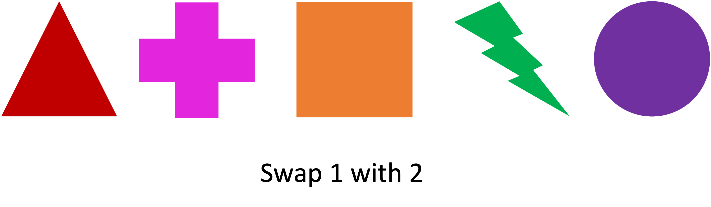
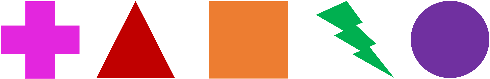
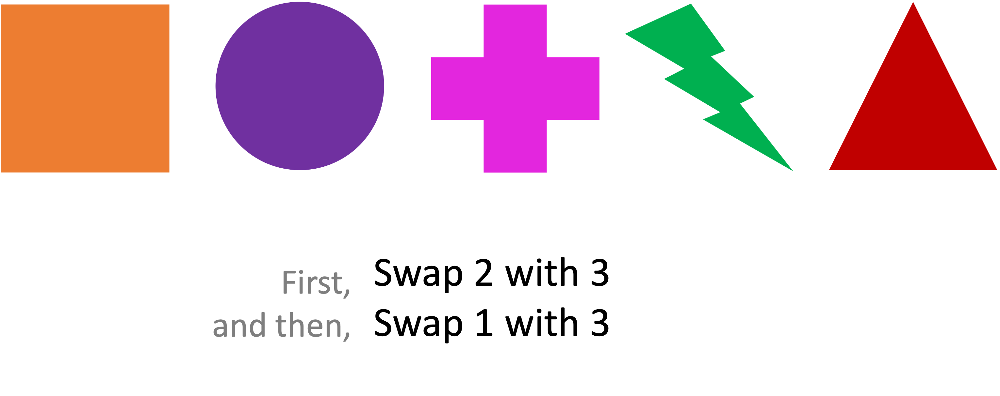
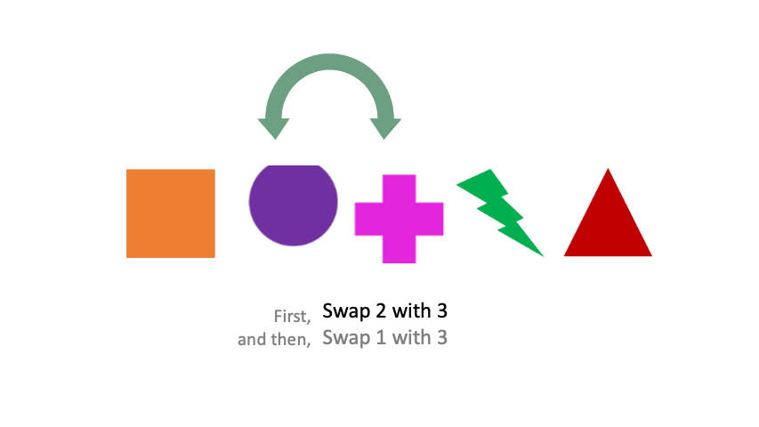
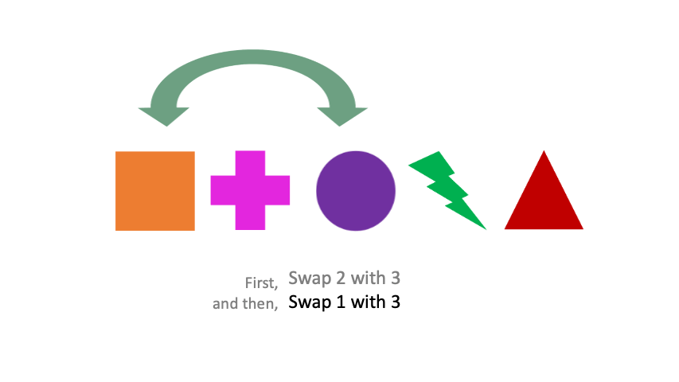
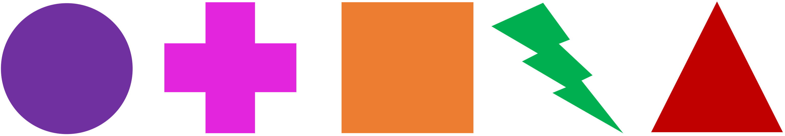
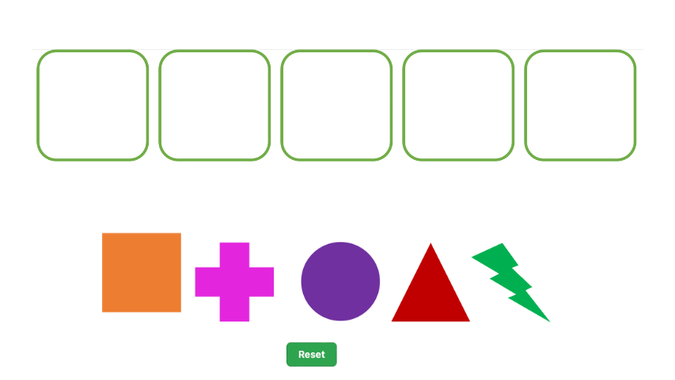

<!DOCTYPE html>
<html>
  <head>
    <title>USYD Cognitive Flexibility</title>
    <script src="http://cogflex.com.au/jspsych/jspsych 6.3.1/jspsych.js"></script>
    <script src="https://cdnjs.cloudflare.com/ajax/libs/Chart.js/3.3.2/chart.min.js"></script>
    <script src="https://cdnjs.cloudflare.com/ajax/libs/jcanvas/21.0.1/min/jcanvas.min.js"></script>
    <script src="https://cdnjs.cloudflare.com/ajax/libs/chartjs-plugin-annotation/1.0.2/chartjs-plugin-annotation.js"></script>
    <script src='http://cdnjs.cloudflare.com/ajax/libs/jquery/2.1.3/jquery.min.js'></script>
    <script src="https://ajax.googleapis.com/ajax/libs/jqueryui/1.12.0/jquery-ui.min.js"></script>
    <script src='https://cdnjs.cloudflare.com/ajax/libs/foundation/5.5.2/js/foundation.min.js'></script>
    <script src="http://cogflex.com.au/jspsych/jspsych 6.3.1/plugins/jspsych-html-keyboard-response.js"></script>
    <script src="http://cogflex.com.au/jspsych/jspsych 6.3.1/plugins/jspsych-html-button-response.js"></script>
    <script src="http://cogflex.com.au/jspsych/jspsych 6.3.1/plugins/jspsych-fullscreen.js"></script>
    <script src="js/present-swaps.js"></script>
    <script src="js/answer-swaps.js"></script>
    <script src="http://cogflex.com.au/jspsych/jspsych 6.3.1/plugins/jspsych-survey-text.js"></script>
    <script src="http://cogflex.com.au/jspsych/jspsych%206.3.1/plugins/jspsych-preload.js"></script>
    <script src="http://cogflex.com.au/jspsych/jspsych 6.3.1/plugins/jspsych-instructions.js"></script>
    <script src="http://cogflex.com.au/jspsych/jspsych 6.3.1/custom-plugins/jspsych-survey-demographics.js"></script>
    <link href="http://cogflex.com.au/jspsych/jspsych 6.3.1/jspsych.css" rel="stylesheet" type="text/css" />
    <link href="css/custom.css" rel="stylesheet" type="text/css" />
  </head>
  <body>
  </body>
  <script>


    //**********************//
    // CPS Demo
    //**********************//


    // Experiment Paramaters
      experimentname = "swaps" // Should correspond to the foldername on the cogflex server
      user = 'kit' // Should correspind to the user on the cogflex server
      ID = jsPsych.randomization.randomID();
      PID = jsPsych.data.urlVariables();
      end_message = "The study is complete. Thank you for your participation. Press OK to return to Prolific";
      eta = 15
      goal = "rearrange sequences of shapes in your mind."

    //**********************//
    // Trial types
    //**********************//

    var images = ['Stimuli/ins-1.png','Stimuli/ins-2.png','Stimuli/ins-3.png','Stimuli/ins-4.gif','Stimuli/ins-5.gif','Stimuli/ins-6.png','Stimuli/ins-7.gif','Stimuli/response-box.png', 'Stimuli/stim-1.png', 'Stimuli/stim-2.png', 'Stimuli/stim-3.png', 'Stimuli/stim-4.png', 'Stimuli/stim-5.png'];

    var preload = {
          type: 'preload',
          images: images
      }

    var instructions = {
        type: 'instructions',
        pages: ['<b>SWAPS TASK</b>'+'<br><br>'+'Welcome to the Swaps Task. This is a task of mental flexibility. It should take about 15 minutes. On each trial, you will be shown some shapes. You will then be given an instruction, for instance <u>"Swap 1 with 2"</u>. This means you need to rearrange the order of the shapes (in your head), such that the shape in position 1 is swapped with the shape in position 2. Try the example below.' +
        '<br><br>' + '</img>' +"<br><br>" + 'Press spacebar to see the answer.',
        'You should have got the order:' + '<br><br>' + '</img>' + '<br><br> This is because you swap the triangle in position 1 with cross in position 2. That was an easy practice item because there was only one swap. However, all the items in the actual task will have multiple swaps. This means you have to hold the answer to the first swap in mind while you solve the second swap. For instance, try the problem below:' +
        '<br><br>' + '</img>' + '<br>The answer will be the final layout of the shapes after all the swaps have been completed in sequence. <br>Press the spacebar to check your answer.',
        '</img>' + '<br>' + '</img>' +'<br><br>Your answer should be the below. This is because the first swap involved swapping the circle with the cross (2 with 3); and then the second swap involved swapping the square and the circle (1 with 3), ending up with the below.' + '<br><br>' + '</img>' + '<br><br>Press spacebar to continue.',
        '</img>' +'<br>To input your answer drag the shapes in the correct order into the green squares. If you make a mistake, you can reset the input by hitting reset. After you have dragged all of the symbols to the location input, you can hit submit to progress'+ '<br><br>Press spacebar to <b>begin the task<b>. There will be 20 items',
        'Please remember to solve the items <b>in your head and DO NOT</b> write anything down' + '<br><br>Press spacebar to start.',
      ],
      key_forward: ' '
      }

    // Welcome
      var welcome = {
          type: 'survey-text',
          questions: [
            {prompt: "Please enter your Prolific ID", name: 'prolificID', required:true}
          ],
          preamble: "<font size = '15' color='#002080'><b>Welcome to the experiment!</b></font><br><br> This experiment will run for about " + eta + " minutes. Your goal will be " + goal,
          button_label: "Login",
        };


    // Demographics
    var demographics = {
      type: 'survey-demographics',
      preamble: "<font size = '15' color='#002080'>Basic Information</font>",
      questions: [
        {prompt: "Sex:", name: 'Sex', options: ["Male", "Female", "Non binary" ,"Prefer not to say"], required:true},
        {prompt: "Do you speak english fluently?:", name: 'english', options: ["Yes", "No"], required:true}
        ]
    };


    // Fullscreen
      var full = {
      type: 'fullscreen',
        fullscreen_mode: true
      }

    // Instructions
      var test_start = {
        type: 'CPS',
        stimulus: '<div class = centerbox><p class = center-block-text>Starting the swaps task.</p></div>',
        choices: ["I'm ready to start!"],
        post_trial_gap: 1000

      }

      swap_order = [];
      stim_order = [];
      var  stim_present = {
        type: 'present-swaps',
        stimulus: function(){
          ss = jsPsych.randomization.shuffle(['Stimuli/stim-1.png', 'Stimuli/stim-2.png', 'Stimuli/stim-3.png', 'Stimuli/stim-4.png', 'Stimuli/stim-5.png'])
          stim_order = ss;
        return(ss)
        },
        stimulus_height: 200,
        prompt: function(){

          front_back = jsPsych.timelineVariable('front_back');


          if(front_back == 0){
            sys = [1,2,3]
          } else if(front_back == 1){
            sys = [3,4,5]
          }

          unsys= [1,2,3,4,5];

          trial_sys = jsPsych.timelineVariable('trial_sys')


          if(trial_sys == 1){array = sys} else {array = unsys}


          swaps = jsPsych.randomization.sampleWithoutReplacement(array,2)
          holdout = jsPsych.randomization.sampleWithoutReplacement(swaps,1)
          swap1 = swaps[0]
          swap2 = swaps[1]
          index = array.indexOf(parseInt(holdout));
          array.splice(index, 1);


          swaps = jsPsych.randomization.sampleWithoutReplacement(array,2)
          holdout = jsPsych.randomization.sampleWithoutReplacement(swaps,1)
          swap3 = swaps[0]
          swap4 = swaps[1]
          if(front_back == 0){
            sys = [1,2,3]
          } else if(front_back == 1){
            sys = [3,4,5]
          }

          unsys= [1,2,3,4,5];
          if(trial_sys == 1){array = sys} else {array = unsys}
          index = array.indexOf(parseInt(holdout));

          array.splice(index, 1);


          swaps = jsPsych.randomization.sampleWithoutReplacement(array,2)
          holdout = jsPsych.randomization.sampleWithoutReplacement(swaps,1)
          swap5 = swaps[0]
          swap6 = swaps[1]
          if(front_back == 0){
            sys = [1,2,3]
          } else if(front_back == 1){
            sys = [3,4,5]
          }

          unsys= [1,2,3,4,5];
          if(trial_sys == 1){array = sys} else {array = unsys}
          index = array.indexOf(parseInt(holdout));
          array.splice(index, 1);


          swaps = jsPsych.randomization.sampleWithoutReplacement(array,2)
          holdout = jsPsych.randomization.sampleWithoutReplacement(swaps,1)
          swap7 = swaps[0]
          swap8 = swaps[1]
          if(front_back == 0){
            sys = [1,2,3]
          } else if(front_back == 1){
            sys = [3,4,5]
          }

          unsys= [1,2,3,4,5];
          if(trial_sys == 1){array = sys} else {array = unsys}
          index = array.indexOf(parseInt(holdout));
          array.splice(index, 1);


          swap_order = [swap1, swap2, swap3, swap4, swap5, swap6, swap7, swap8]

          return("<h2>Swap " + swap_order[0] + " with " + swap_order[1] + "<br><br>Swap " + swap_order[2] + " with " + swap_order[3] + "<br><br>Swap " + swap_order[4] + " with " + swap_order[5] + "<br><br>Swap " + swap_order[6] + " with " + swap_order[7] + "</h2>")
        },
        choices: [' '],
        response_ends_trial: true,
        render_on_canvas: false,
        on_finish: function(data){
          data.swaps = swap_order;
          hold_sys = jsPsych.timelineVariable('trial_sys');
          hold_FB = jsPsych.timelineVariable('front_back');
          data.systematic = jsPsych.timelineVariable('trial_sys');
          data.front_back = jsPsych.timelineVariable('front_back');


        }

      }


      var stim_answer = {
        type: 'answer_swaps',
        stimulus: jsPsych.randomization.shuffle(['Stimuli/stim-1.png', 'Stimuli/stim-2.png', 'Stimuli/stim-3.png', 'Stimuli/stim-4.png', 'Stimuli/stim-5.png']),
        stimulus_height: 200,
        choices: ['cmd+p'],
        on_finish: function(data){
          data.swaps = swap_order;
          numbersCopy = [...stim_order];
          data.correct_response = swapArray(numbersCopy)
          data.systematic = hold_sys;
          data.front_back = front_back;
          if(data.correct_response[1] == data.response[1] &
          data.correct_response[2] == data.response[2] &
        data.correct_response[3] == data.response[3] &
      data.correct_response[4] == data.response[4]){data.correct = 1} else {data.correct = 0}

        }
      }


swapArray = function(x){
    [x[swap_order[0]-1], x[swap_order[1]-1]] = [x[swap_order[1]-1], x[swap_order[0]-1]];
    [x[swap_order[2]-1], x[swap_order[3]-1]] = [x[swap_order[3]-1], x[swap_order[2]-1]];
   [x[swap_order[4]-1], x[swap_order[5]-1]] = [x[swap_order[5]-1], x[swap_order[4]-1]];
   [x[swap_order[6]-1], x[swap_order[7]-1]] = [x[swap_order[7]-1], x[swap_order[6]-1]];
    return(x)
}


      var block = {
        timeline: [stim_present, stim_answer],
        timeline_variables: [
    { trial_sys: '1', front_back: '0'},
    { trial_sys: '1', front_back: '1'},
   { trial_sys: '0'},
   { trial_sys: '0'}
],
sample: {
     type: 'fixed-repetitions',
     size: 5
 }
      }

    //**********************//
    // Experiment
    //**********************//

    function goHome(){
            window.location.replace("https://app.prolific.co/submissions/complete?cc=421FB6CE");

    }

//

      jsPsych.init({
             timeline: [preload, welcome, demographics, full, instructions, block],
             on_timeline_start: function(){
                 trialnum = 1
             },
             on_finish: function(data){
          var filestore = ID + '.csv'; var all_data = jsPsych.data.get(); saveData(filestore, experimentname, all_data.csv()); alert(end_message); goHome()}
         });


    //**********************//
    // SAVING
    //**********************//

    // Add properties
    jsPsych.data.addProperties({ID: ID});
    jsPsych.data.addProperties({PID: PID});


    // Save
    function saveData(filename, experiment, filedata){
        	var filename = '../users/'+user+'/' + experiment + '/Data/' + filename;
           $.ajax({
              type:'post',
              cache: false,
              url: 'http://cogflex.com.au/jspsych/jsPsych.php', // this is the path to the above PHP script
              data: {filename: filename, filedata: filedata}
           });
        }


      </script>
    </html>
